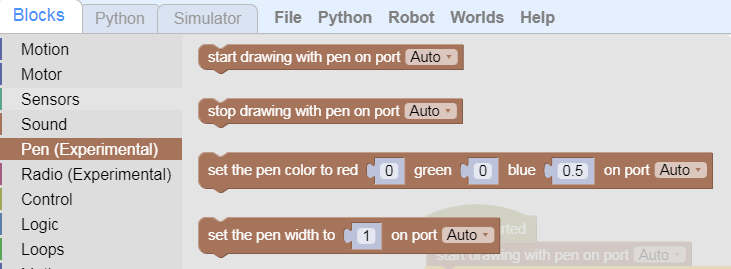

Painting Challenges
Now we are going to use our Robot to do complete some paintings.
In order to do that we have to use the special robot Pen we have.

The two main functions are:
- Start Drawing: starts ejecting ink from pen tip
- Stop Drawing: stops ejecting ink
We can also mess around with the type of ink and how much of it to shoot out in order to make wider or thinner lines...
- Set Pen Color
- Set Pen Width
Simple Line
Let's start with Challenge 1.

We are going to use a simple Robot and take away most of the coding blocks to concentrate on sequences of simple Movement and Pen blocks.
Lines with Turns
What can you draw?
Use this canvas to draw anything you'd like!